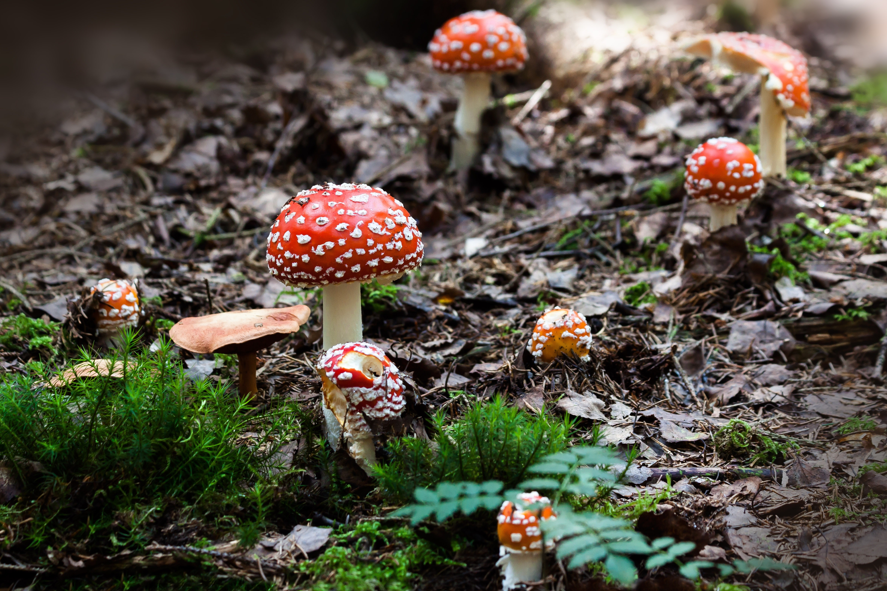

Fungi are incredible
This is a fungae lovers page, fungae is considered misterious and rare across the world but they have several uses that can help everybody life and also they have Suspicious Uses.

This is a fungae lovers page, fungae is considered misterious and rare across the world but they have several uses that can help everybody life and also they have Suspicious Uses.
Psilocybin mushroom: Drugs... do not consume without knowing what they actually do, they can get u really high.

Lentinus edodes: Also known as shitake mushrooms, they are really good for a healthy diet and also are delicious 100% recommended.
Penicillium notatum: this fungi is the main ingredient for penicillin that is the main ingredient for antibiotics, literally the savior of the world.

More shitake mushrooms cuz I really love them.
Signup here for free to the group of fungi consumers, it is between our hands to consume and change this world.